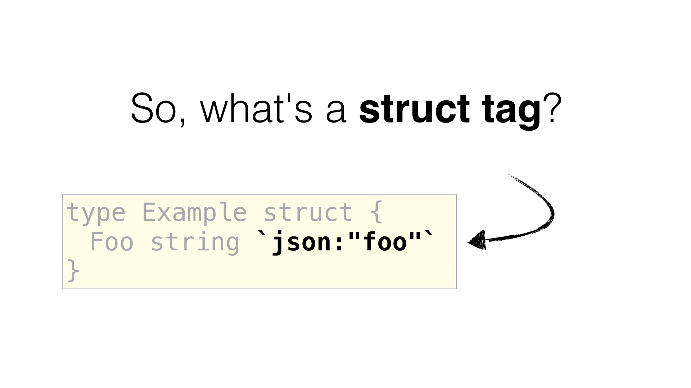
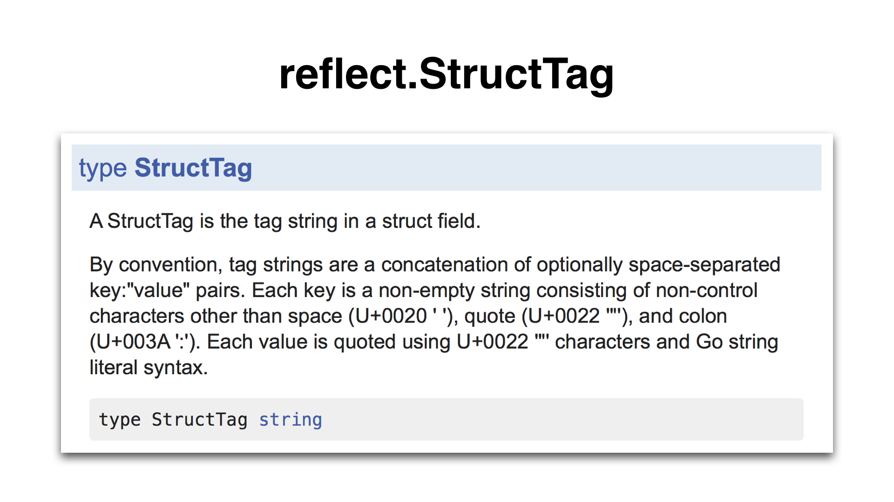

原文: https://arslan.io/2017/09/14/the-ultimate-guide-to-writing-a-go-tool/
作者：Fatih Arslan
译文：http://oopsguy.com/2017/10/27/the-ultimate-guide-to-writing-a-go-tool/
译者：oopsguy.com
我之前编写过一个叫 gomodifytags 的工具，它使我的生活变得很轻松。它会根据字段名称自动填充结构体标签字段。让我来展示一下它的功能：

使用这样的工具可以很容易管理结构体的多个字段。该工具还可以添加和删除标签、管理标签选项（如 omitempty）、定义转换规则（snake_case、camelCase 等）等。但该工具是怎样工作的呢？它内部使用了什么 Go 包？有很多问题需要回答。
这是一篇非常长的博文，其解释了如何编写这样的工具以及每个构建细节。它包含许多独特的细节、技巧和未知的 Go 知识。
拿起一杯咖啡☕️，让我们深入一下吧！
首先，让我列出这个工具需要做的事情：
- 它需要读取源文件、理解并能够解析 Go 文件
- 它需要找到相关的结构体
- 找到结构体后，它需要获取字段名称
- 它需要根据字段名来更新结构体标签（根据转换规则，如 _snakecase）
- 它需要能够把这些更改更新到文件中，或者能够以可消费的方式输出更改后的结果
我们首先来了解什么是 结构体（struct）标签（tag），从这里我们可以学习到所有东西以及如何把它们组合在一起使用，在此基础上您可以构建出这样的工具。

结构体的标签值（内容，如 json: "foo"）不是官方规范的一部分，但是 reflect 包定义了一个非官方规范的格式标准，这个格式同样被 stdlib 包（如 encoding/json）所使用。它通过 reflect.StructTag 类型定义：

这个定义有点长，不是很容易让人理解。我们尝试分解一下它：
- 一个结构体标签是一个字符串文字（因为它有字符串类型）
- 键（key）部分是一个无引号的字符串文字
- 值（value）部分是带引号的字符串文字
- 键和值由冒号（:)分隔。键与值且由冒号分隔组成的值称为键值对
- 结构体标签可以包含多个键值对（可选）。键值对由空格分隔。
- 不是定义的部分是选项设置。像
encoding/json 这样的包在读取值时当作一个由逗号分隔列表。 第一个逗号后的内容都是选项部分，比如 foo,omitempty,string。其有一个名为 foo 的值和 [omitempty, string] 选项
- 因为结构体标签是字符串文字，所以需要使用双引号或反引号包围。因为值必须使用引号，因此我们总是使用反引号对整个标签做处理。
总结一下：
我们已经了解了什么是结构体标签，我们可以根据需要轻松地修改它。 现在的问题是，我们如何解析它才能使我们能够轻松进行修改？幸运的是，reflect.StructTag 包含一个方法，它允许我们进行解析并返回指定键的值。以下是一个示例：
1 2 3 4 5 6 7 8 9 10 11
| package main import ( "fmt" "reflect" ) func main() { tag := reflect.StructTag(`species:"gopher" color:"blue"`) fmt.Println(tag.Get("color"), tag.Get("species")) }
|
输出结果：
如果键不存在，则返回一个空字符串。
这是非常有用，但是也有一些不足使得它并不适合我们，因为我们需要更多的灵活性：
- 它无法检测到标签是否格式错误（如：键部分用引号包裹，值部分没有使用引号等）。
- 它无法得知选项的语义。
- 它没有办法迭代现有的标签或返回它们。我们必须要知道要修改哪些标签。如果不知道名字怎么办？
- 修改现有标签是不可能的。
- 我们不能从头开始构建新的结构体标签。
为了改进这一点，我写了一个自定义的 Go 包，它解决了上面提到的所有问题，并提供了一个 API，可以轻松地改变结构体标签的各个方面。

该包名为 structtag，可以从 github.com/fatih/structtag 获取。 这个包允许我们以简洁的方式解析和修改标签。以下是一个完整的示例，您可以复制/粘贴并自行尝试：
1 2 3 4 5 6 7 8 9 10 11 12 13 14 15 16 17 18 19 20 21 22 23 24 25 26 27 28 29 30 31 32 33 34 35 36 37 38 39 40 41 42 43
| package main import ( "fmt" "github.com/fatih/structtag" ) func main() { tag := `json:"foo,omitempty,string" xml:"foo"` tags, err := structtag.Parse(string(tag)) if err != nil { panic(err) } for _, t := range tags.Tags() { fmt.Printf("tag: %+v\n", t) } jsonTag, err := tags.Get("json") if err != nil { panic(err) } jsonTag.Name = "foo_bar" jsonTag.Options = nil tags.Set(jsonTag) tags.Set(&structtag.Tag{ Key: "hcl", Name: "foo", Options: []string{"squash"}, }) fmt.Println(tags) }
|
现在我们了解了如何解析、修改或创建结构体标签，是时候尝试修改一个 Go 源文件了。在上面的示例中，标签已经存在，但是如何从现有的 Go 结构体中获取标签呢？
答案是通过 AST。AST（Abstract Syntax Tree，抽象语法树）允许我们从源代码中检索每个标识符（节点）。 下面你可以看到一个结构体类型的 AST（简化版）：
在这棵树中，我们可以检索和操作每个标识符、每个字符串、每个括号等。这些都由 AST 节点表示。例如，我们可以通过替换表示它的节点将字段名称从 Foo 更改为 Bar。 该逻辑同样适用于结构体标签。
要获得一个 Go AST，我们需要解析源文件并将其转换成一个 AST。实际上，这两者都是通过同一个步骤来处理的。
要实现这一点，我们将使用 go/parser 包来解析文件以获取 AST（整个文件），然后使用 go/ast 包来处理整个树（我们可以手动做这个工作，但这是另一篇博文的主题）。 您在下面可以看到一个完整的例子：
1 2 3 4 5 6 7 8 9 10 11 12 13 14 15 16 17 18 19 20 21 22 23 24 25 26 27 28 29 30 31 32 33
| package main import ( "fmt" "go/ast" "go/parser" "go/token" ) func main() { src := `package main type Example struct { Foo string` + " `json:\"foo\"` }" fset := token.NewFileSet() file, err := parser.ParseFile(fset, "demo", src, parser.ParseComments) if err != nil { panic(err) } ast.Inspect(file, func(x ast.Node) bool { s, ok := x.(*ast.StructType) if !ok { return true } for _, field := range s.Fields.List { fmt.Printf("Field: %s\n", field.Names[0].Name) fmt.Printf("Tag: %s\n", field.Tag.Value) } return false }) }
|
输出结果：
1 2
| Field: Foo Tag: `json:"foo"`
|
代码执行以下操作：
- 我们使用一个单独的结构体定义了一个 Go 包示例
- 我们使用
go/parser 包来解析这个字符串。parser 包也可以从磁盘读取文件（或整个包）。
- 在解析后，我们处理了节点（分配给变量文件）并查找由 *ast.StructType 定义的 AST 节点（参考 AST 图）。通过
ast.Inspect() 函数完成树的处理。它会遍历所有节点，直到它收到 false 值。 这是非常方便的，因为它不需要知道每个节点。
- 我们打印了结构体的字段名称和结构体标签。
我们现在可以做两件重要的事，首先，我们知道了如何解析一个 Go 源文件并检索结构体标签（通过 go/parser）。其次，我们知道了如何解析 Go 结构体标签，并根据需要进行修改（通过 github.com/fatih/structtag）。
我们有了这些，现在可以通过使用这两个知识点开始构建我们的工具（命名为 gomodifytags）。该工具应按顺序执行以下操作
- 获取配置，用于告诉我们要修改哪个结构体
- 根据配置查找和修改结构体
- 输出结果
由于 gomodifytags 将主要应用于编辑器，我们将通过 CLI 标志传入配置。第二步包含多个步骤，如解析文件，找到正确的结构体，然后修改结构体（通过修改 AST）。最后，我们将结果输出，无论结果的格式是原始的 Go 源文件还是某种自定义协议（如 JSON，稍后再说）。
以下是简化版 gomodifytags 的主要功能：
让我们更详细地解释每一个步骤。为了简单起见，我将尝试以概括的形式来解释重要部分。 原理都一样，一旦你读完这篇博文，你将能够在没有任何指导情况下阅整个源码（指南末尾附带了所有资源）
让我们从第一步开始，了解如何获取配置。以下是我们的配置，包含所有必要的信息
1 2 3 4 5 6 7 8 9 10 11 12 13 14 15 16 17 18 19 20 21 22 23 24
| type config struct { file string modified io.Reader output string write bool offset int structName string line string start, end int remove []string add []string override bool transform string sort bool clear bool addOpts []string removeOpts []string clearOpt bool }
|
它分为三个主要部分：
第一部分包含有关如何读取和读取哪个文件的设置。这可以是本地文件系统的文件名，也可以直接来自 stdin（主要用在编辑器中）。 它还设置如何输出结果（go 源文件或 JSON），以及是否应该覆盖文件而不是输出到 stdout。
第二部分定义了如何选择一个结构体及其字段。有多种方法可以做到这一点。 我们可以通过它的偏移（光标位置）、结构体名称、一行单行（仅选择字段）或一系列行来定义它。最后，我们无论如何都得到开始行/结束行。例如在下面的例子中，您可以看到，我们使用它的名字来选择结构体，然后提取开始行和结束行以选择正确的字段：
如果是用于编辑器，则最好使用字节偏移量。例如下面你可以发现我们的光标刚好在 port 字段名称后面，从那里我们可以很容易地得到开始行/结束行：
配置中的第三个部分实际上是一个映射到 structtag 包的一对一映射。它基本上允许我们在读取字段后将配置传给 structtag 包。 如你所知，structtag 包允许我们解析一个结构体标签并对各个部分进行修改。但它不会覆盖或更新结构体字段。
我们如何获得配置？我们只需使用 flag 包，然后为配置中的每个字段创建一个标志，然后分配它们。举个例子：
1 2 3 4
| flagFile := flag.String("file", "", "Filename to be parsed") cfg := &config{ file: *flagFile, }
|
我们对配置中的每个字段执行相同操作。有关完整内容，请查看 gomodifytag 当前 master 分支的标志定义
一旦我们有了配置，就可以做些基本的验证：
1 2 3 4 5 6 7 8 9 10 11 12 13 14 15 16 17 18 19 20 21 22 23 24 25 26 27 28 29 30 31 32 33 34 35 36 37 38 39 40
| func main() { cfg := config{ ... } err := cfg.validate() if err != nil { log.Fatalln(err) } } func (c *config) validate() error { if c.file == "" { return errors.New("no file is passed") } if c.line == "" && c.offset == 0 && c.structName == "" { return errors.New("-line, -offset or -struct is not passed") } if c.line != "" && c.offset != 0 || c.line != "" && c.structName != "" || c.offset != 0 && c.structName != "" { return errors.New("-line, -offset or -struct cannot be used together. pick one") } if (c.add == nil || len(c.add) == 0) && (c.addOptions == nil || len(c.addOptions) == 0) && !c.clear && !c.clearOption && (c.removeOptions == nil || len(c.removeOptions) == 0) && (c.remove == nil || len(c.remove) == 0) { return errors.New("one of " + "[-add-tags, -add-options, -remove-tags, -remove-options, -clear-tags, -clear-options]" + " should be defined") } return nil }
|
将验证部分放置在一个单独的函数中，以便测试。
现在我们了解了如何获取配置并进行验证，我们继续解析文件：
我们已经开始讨论如何解析文件了。这里的解析是 config 结构体的一个方法。实际上，所有的方法都是 config 结构体的一部分：
1 2 3 4 5 6 7 8 9 10 11 12 13 14 15 16 17 18 19 20 21 22 23 24 25 26 27 28
| func main() { cfg := config{} node, err := cfg.parse() if err != nil { return err } } func (c *config) parse() (ast.Node, error) { c.fset = token.NewFileSet() var contents interface{} if c.modified != nil { archive, err := buildutil.ParseOverlayArchive(c.modified) if err != nil { return nil, fmt.Errorf("failed to parse -modified archive: %v", err) } fc, ok := archive[c.file] if !ok { return nil, fmt.Errorf("couldn't find %s in archive", c.file) } contents = fc } return parser.ParseFile(c.fset, c.file, contents, parser.ParseComments) }
|
parse 函数只做一件事：解析源代码并返回一个 ast.Node。如果我们传入的是文件，那就非常简单了，在这种情况下，我们使用 parser.ParseFile() 函数。需要注意的是 token.NewFileSet()，它创建一个 *token.FileSet 类型。我们将它存储在 c.fset 中，同时也传给了 parser.ParseFile() 函数。为什么呢？
因为 fileset 用于为每个文件单独存储每个节点的位置信息。这在以后非常有用，可以用于获得 ast.Node 的确切位置（请注意，ast.Node 使用了一个压缩了的位置信息 token.Pos。要获取更多的信息，它需要通过 token.FileSet.Position() 函数来获取一个 token.Position，其包含更多的信息）
让我们继续。如果通过 stdin 传递源文件，那么这更加有趣。config.modified 字段是一个易于测试的 io.Reader，但实际上我们传递的是 stdin。我们如何检测是否需要从 stdin 读取呢？
我们询问用户是否想通过 stdin 传递内容。这种情况下，工具用户需要传递 --modified 标志（这是一个布尔标志）。如果用户了传递它，我们只需将 stdin 分配给 c.modified：
1 2 3 4 5 6
| flagModified = flag.Bool("modified", false, "read an archive of modified files from standard input") if *flagModified { cfg.modified = os.Stdin }
|
如果再次检查上面的 config.parse() 函数，您将发现我们检查是否已分配了 .modified 字段。因为 stdin 是一个任意的数据流，我们需要能够根据给定的协议进行解析。在这种情况下，我们假定存档包含以下内容：
- 文件名，后接一行新行
- 文件大小（十进制），后接一行新行
- 文件的内容
- 因为我们知道文件大小，可以无障碍地解析文件内容。任何超出给定文件大小的部分，我们仅仅停止解析。
此方法也被其他几个工具所使用（如 guru、gogetdoc 等），对编辑器来说非常有用。 因为这样可以让编辑器传递修改后的文件内容，而不会保存到文件系统中。因此命名为 modified。
现在我们有了自己的节点，让我们继续 “搜索结构体” 这一步：
在 main 函数中，我们将使用从上一步解析得到的 ast.Node 调用 findSelection() 函数：
1 2 3 4 5 6 7 8 9 10
| func main() { start, end, err := cfg.findSelection(node) if err != nil { return err } }
|
cfg.findSelection() 函数根据配置返回结构体的开始位置和结束位置以告知我们如何选择一个结构体。它迭代给定节点，然后返回开始位置/结束位置（如上配置部分中所述）：
但是怎么做呢？记住有三种模式。分别是行选择、偏移量和结构体名称：
1 2 3 4 5 6 7 8 9 10 11 12 13
| func (c *config) findSelection(node ast.Node) (int, int, error) { if c.line != "" { return c.lineSelection(node) } else if c.offset != 0 { return c.offsetSelection(node) } else if c.structName != "" { return c.structSelection(node) } else { return 0, 0, errors.New("-line, -offset or -struct is not passed") } }
|
行选择是最简单的部分。这里我们只返回标志值本身。因此如果用户传入 --line 3,50 标志，函数将返回(3, 50, nil)。 它所做的就是拆分标志值并将其转换为整数（同样执行验证）：
1 2 3 4 5 6 7 8 9 10 11 12 13 14 15 16 17 18 19 20 21 22 23
| func (c *config) lineSelection(file ast.Node) (int, int, error) { var err error splitted := strings.Split(c.line, ",") start, err := strconv.Atoi(splitted[0]) if err != nil { return 0, 0, err } end := start if len(splitted) == 2 { end, err = strconv.Atoi(splitted[1]) if err != nil { return 0, 0, err } } if start > end { return 0, 0, errors.New("wrong range. start line cannot be larger than end line") } return start, end, nil }
|
当您选中一组行并高亮它们时，编辑器将使用此模式。
偏移量和结构体名称选择需要做更多的工作。 对于这些，我们首先需要收集所有给定的结构体，以便可以计算偏移位置或搜索结构体名称。为此，我们首先要有一个收集所有结构体的函数：
1 2 3 4 5 6 7 8 9 10 11 12 13 14 15 16 17 18 19 20 21 22 23 24 25 26 27 28 29
| func collectStructs(node ast.Node) map[token.Pos]*structType { structs := make(map[token.Pos]*structType, 0) collectStructs := func(n ast.Node) bool { t, ok := n.(*ast.TypeSpec) if !ok { return true } if t.Type == nil { return true } structName := t.Name.Name x, ok := t.Type.(*ast.StructType) if !ok { return true } structs[x.Pos()] = &structType{ name: structName, node: x, } return true } ast.Inspect(node, collectStructs) return structs }
|
我们使用 ast.Inspect() 函数逐步遍历 AST 并搜索结构体。
我们首先搜索 *ast.TypeSpec，以便我们可以获得结构体名称。搜索 *ast.StructType 时给定的是结构体本身，而不是它的名字。 这就是为什么我们有一个自定义的 structType 类型，它保存了名称和结构体节点本身。这样在各个地方都很方便。 因为每个结构体的位置都是唯一的，并且在同一位置上不可能存在两个不同的结构体，因此我们使用位置作为 map 的键。
现在我们拥有了所有结构体，在最后可以返回一个结构体的起始位置和结束位置的偏移量和结构体名称模式。 对于偏移位置，我们检查偏移是否在给定的结构体之间：
1 2 3 4 5 6 7 8 9 10 11 12 13 14 15 16 17 18 19 20 21 22 23 24
| func (c *config) offsetSelection(file ast.Node) (int, int, error) { structs := collectStructs(file) var encStruct *ast.StructType for _, st := range structs { structBegin := c.fset.Position(st.node.Pos()).Offset structEnd := c.fset.Position(st.node.End()).Offset if structBegin <= c.offset && c.offset <= structEnd { encStruct = st.node break } } if encStruct == nil { return 0, 0, errors.New("offset is not inside a struct") } start := c.fset.Position(encStruct.Pos()).Line end := c.fset.Position(encStruct.End()).Line return start, end, nil }
|
我们使用 collectStructs() 来收集所有结构体，之后在这里迭代。还得记得我们存储了用于解析文件的初始 token.FileSet 么？
现在可以用它来获取每个结构体节点的偏移信息（我们将其解码为一个 token.Position，它为我们提供了 .Offset 字段）。 我们所做的只是一个简单的检查和迭代，直到我们找到结构体（这里命名为 encStruct）：
1 2 3 4 5 6 7 8 9
| for _, st := range structs { structBegin := c.fset.Position(st.node.Pos()).Offset structEnd := c.fset.Position(st.node.End()).Offset if structBegin <= c.offset && c.offset <= structEnd { encStruct = st.node break } }
|
有了这些信息，我们可以提取找到的结构体的开始位置和结束位置：
1 2
| start := c.fset.Position(encStruct.Pos()).Line end := c.fset.Position(encStruct.End()).Line
|
该逻辑同样适用于结构体名称选择。 我们所做的只是尝试检查结构体名称，直到找到与给定名称一致的结构体，而不是检查偏移量是否在给定的结构体范围内：
1 2 3 4 5 6 7 8 9 10 11
| func (c *config) structSelection(file ast.Node) (int, int, error) { for _, st := range structs { if st.name == c.structName { encStruct = st.node } } }
|
现在我们有了开始位置和结束位置，我们终于可以进行第三步了：修改结构体字段。
在 main 函数中，我们将使用从上一步解析的节点来调用 cfg.rewrite() 函数：
1 2 3 4 5 6 7 8 9 10 11 12 13 14
| func main() { rewrittenNode, errs := cfg.rewrite(node, start, end) if errs != nil { if _, ok := errs.(*rewriteErrors); !ok { return errs } } }
|
这是该工具的核心。在 rewrite 函数中，我们将重写开始位置和结束位置之间的所有结构体字段。 在深入了解之前，我们可以看一下该函数的大概内容：
1 2 3 4 5 6 7 8 9 10 11 12 13 14 15 16
| func (c *config) rewrite(node ast.Node, start, end int) (ast.Node, error) { errs := &rewriteErrors{errs: make([]error, 0)} rewriteFunc := func(n ast.Node) bool { } if len(errs.errs) == 0 { return node, nil } ast.Inspect(node, rewriteFunc) return node, errs }
|
正如你所看到的，我们再次使用 ast.Inspect() 来逐步处理给定节点的树。我们重写 rewriteFunc 函数中的每个字段的标签（更多内容在后面）。
因为传递给 ast.Inspect() 的函数不会返回错误，因此我们将创建一个错误映射（使用 errs 变量定义），之后在我们逐步遍历树并处理每个单独的字段时收集错误。现在让我们来谈谈 rewriteFunc 的内部原理：
1 2 3 4 5 6 7 8 9 10 11 12 13 14 15 16 17 18 19 20 21 22 23 24 25 26 27 28 29 30 31 32 33 34 35 36 37 38 39 40 41 42 43 44 45 46 47
| rewriteFunc := func(n ast.Node) bool { x, ok := n.(*ast.StructType) if !ok { return true } for _, f := range x.Fields.List { line := c.fset.Position(f.Pos()).Line if !(start <= line && line <= end) { continue } if f.Tag == nil { f.Tag = &ast.BasicLit{} } fieldName := "" if len(f.Names) != 0 { fieldName = f.Names[0].Name } if f.Names == nil { ident, ok := f.Type.(*ast.Ident) if !ok { continue } fieldName = ident.Name } res, err := c.process(fieldName, f.Tag.Value) if err != nil { errs.Append(fmt.Errorf("%s:%d:%d:%s", c.fset.Position(f.Pos()).Filename, c.fset.Position(f.Pos()).Line, c.fset.Position(f.Pos()).Column, err)) continue } f.Tag.Value = res } return true }
|
记住，AST 树中的每一个节点都会调用这个函数。因此，我们只寻找类型为 *ast.StructType 的节点。一旦我们拥有，就可以开始迭代结构体字段。
这里我们使用 start 和 end 变量。这定义了我们是否要修改该字段。如果字段位置位于 start-end 之间，我们将继续，否则我们将忽略：
1 2 3
| if !(start <= line && line <= end) { continue }
|
接下来，我们检查是否存在标签。如果标签字段为空（也就是 nil），则初始化标签字段。这在有助于后面的 cfg.process() 函数避免 panic：
1 2 3
| if f.Tag == nil { f.Tag = &ast.BasicLit{} }
|
现在让我先解释一下一个有趣的地方，然后再继续。gomodifytags 尝试获取字段的字段名称并处理它。然而，当它是一个匿名字段呢？：
1 2 3 4 5
| type Bar string type Foo struct { Bar }
|
在这种情况下，因为没有字段名称，我们尝试从类型名称中获取字段名称：
1 2 3 4 5 6 7 8 9 10 11 12 13 14 15
| fieldName := "" if len(f.Names) != 0 { fieldName = f.Names[0].Name } if f.Names == nil { ident, ok := f.Type.(*ast.Ident) if !ok { continue } fieldName = ident.Name }
|
一旦我们获得了字段名称和标签值，就可以开始处理该字段。cfg.process() 函数负责处理有字段名称和标签值（如果有的话）的字段。在它返回处理结果后（在我们的例子中是 struct tag 格式），我们使用它来覆盖现有的标签值：
1 2 3 4 5 6 7 8 9 10 11 12
| res, err := c.process(fieldName, f.Tag.Value) if err != nil { errs.Append(fmt.Errorf("%s:%d:%d:%s", c.fset.Position(f.Pos()).Filename, c.fset.Position(f.Pos()).Line, c.fset.Position(f.Pos()).Column, err)) continue } f.Tag.Value = res
|
实际上，如果你记得 structtag，它返回标签实例的 String() 表述。在我们返回标签的最终表述之前，我们根据需要使用 structtag 包的各种方法修改结构体。以下是一个简单的说明图示：
例如，我们要扩展 process() 中的 removeTags() 函数。此功能使用以下配置来创建要删除的标签数组（键名称）:
1 2 3 4 5
| flagRemoveTags = flag.String("remove-tags", "", "Remove tags for the comma separated list of keys") if *flagRemoveTags != "" { cfg.remove = strings.Split(*flagRemoveTags, ",") }
|
在 removeTags() 中，我们检查是否使用了 --remove-tags。如果有，我们将使用 structtag 的 tags.Delete() 方法来删除标签：
1 2 3 4 5 6 7 8 9 10 11 12 13 14 15 16 17 18 19
| func (c *config) removeTags(tags *structtag.Tags) *structtag.Tags { if c.remove == nil || len(c.remove) == 0 { return tags } tags.Delete(c.remove...) return tags } 此逻辑同样适用于 `cfg.Process()` 中的所有函数。 <hr/> 我们已经有了一个重写的节点，让我们来讨论最后一个话题。输出和格式化结果：  在 main 函数中，我们将使用上一步重写的节点来调用 `cfg.format()` 函数：
|
go
func main() {
// ... rewrite the node
out, err := cfg.format(rewrittenNode, errs)
if err != nil {
return err
}
fmt.Println(out)
}
1 2 3 4
| 您需要注意的一件事是，我们输出到 **stdout**。这佯做有许多优点。首先，您只需运行工具就能查看到结果， 它不会改变任何东西，只是为了让工具用户立即看到结果。其次，**stdout** 是可组合的，可以重定向到任何地方，甚至可以用来覆盖原来的工具。 现在我们来看看 `format()` 函数：
|
go
func (c *config) format(file ast.Node, rwErrs error) (string, error) {
switch c.output {
case "source":
// return Go source code
case "json":
// return a custom JSON output
default:
return "", fmt.Errorf("unknown output mode: %s", c.output)
}
}
1 2 3 4 5 6
| 我们有**两种输出模式**。 **第一个**（source）以 Go 格式打印 ast.Node。这是默认选项，如果您在命令行使用它或只想看到文件中的更改，那么这非常适合您。 **第二个选项**（json）更为先进，其专为其他环境而设计（特别是编辑器）。它根据以下结构体对输出进行编码：
|
go
type output struct {
Start int json:"start"
End int json:"end"
Lines []string json:"lines"
Errors []string json:"errors,omitempty"
}
1 2 3 4 5 6
| 对工具进行输入和最终结果输出（没有任何错误）大概示意图如下：  回到 `format()` 函数。如之前所述，有两种模式。`source` 模式使用 `go/format` 包将 AST 格式化为 Go 源码。该软件包也被许多其他官方工具（如 gofmt）使用。以下是 source 模式的实现方式：
|
go
var buf bytes.Buffer
err := format.Node(&buf, c.fset, file)
if err != nil {
return "", err
}
if c.write {
err = ioutil.WriteFile(c.file, buf.Bytes(), 0)
if err != nil {
return "", err
}
}
return buf.String(), nil
1 2 3 4 5 6
| 格式包接受 `io.Writer` 并对其进行格式化。这就是为什么我们创建一个中间缓冲区（`var buf bytes.Buffer`）的原因，当用户传入一个 `-write` 标志时，我们可以使用它来覆盖文件。格式化后，我们返回缓冲区的字符串表示形式，其中包含格式化后的 Go 源代码。 `json` 模式更有趣。因为我们返回的是一段源代码，因此我们需要准确地呈现它原本的格式，这也意味着要把注释包含进去。问题在于，当使用 `format.Node()` 打印单个结构体时，如果它们是有损的，则无法打印出 Go 注释。 什么是有损注释（lossy comment）？看看这个例子：
|
go
type example struct {
foo int
bar int
}
1 2 3 4 5 6
| 每个字段都是 `*ast.Field` 类型。此结构体有一个 `*ast.Field.Comment` 字段，其包含某字段的注释。 但是，在上面的例子中，它属于谁？属于 `foo` 还是 `bar`？ 因为不可能确定，这些注释被称为有损注释。如果现在使用 `format.Node()` 函数打印上面的结构体，就会出现问题。 当你打印它时，你可能会得到（https://play.golang.org/p/peHsswF4JQ）：
|
go
type example struct {
foo int
bar int
}
1 2
| 问题在于有损注释是 `*ast.File` 的**一部分**，**它与树分开**。只有打印整个文件时才能打印出来。 所以解决方法是打印整个文件，然后删除掉我们要在 JSON 输出中返回的指定行：
|
go
var buf bytes.Buffer
err := format.Node(&buf, c.fset, file)
if err != nil {
return "", err
}
var lines []string
scanner := bufio.NewScanner(bytes.NewBufferString(buf.String()))
for scanner.Scan() {
lines = append(lines, scanner.Text())
}
if c.start > len(lines) {
return "", errors.New("line selection is invalid")
}
out := &output{
Start: c.start,
End: c.end,
Lines: lines[c.start-1 : c.end], // cut out lines
}
o, err := json.MarshalIndent(out, "", " ")
if err != nil {
return "", err
}
return string(o), nil
```
这样做确保我们可以打印所有注释。
这就是全部内容！
我们成功完成了我们的工具，以下是我们在整个指南中实施的完整步骤图：
回顾一下我们做了什么：
- 我们通过 CLI 标志检索配置
- 我们通过
go/parser 包解析文件来获取一个 ast.Node。
- 在解析文件之后，我们搜索 获取相应的结构体来获取开始位置和结束位置，这样我们可以知道需要修改哪些字段
- 一旦我们有了开始位置和结束位置，我们再次遍历
ast.Node，重写开始位置和结束位置之间的每个字段（通过使用 structtag 包）
- 之后，我们将格式化重写的节点，为编辑器输出 Go 源代码或自定义的 JSON
在创建此工具后，我收到了很多友好的评论，评论者们提到了这个工具如何简化他们的日常工作。正如您所看到，尽管看起来它很容易制作，但在整个指南中，我们已经针对许多特殊的情况做了特别处理。
gomodifytags 成功应用于以下编辑器和插件已经有几个月了，使得数以千计的开发人员提升了工作效率：
如果您对原始源代码感兴趣，可以在这里找到：
https://github.com/fatih/gomodifytags
我还在 Gophercon 2017 上发表了一个演讲，如果您感兴趣，可点击下面的 youtube 链接观看：
https://www.youtube.com/embed/T4AIQ4RHp-c?version=3&rel=1&fs=1&autohide=2&showsearch=0&showinfo=1&iv_load_policy=1&wmode=transparent
谢谢您阅读此文。希望这个指南能启发您从头创建一个新的 Go 工具。